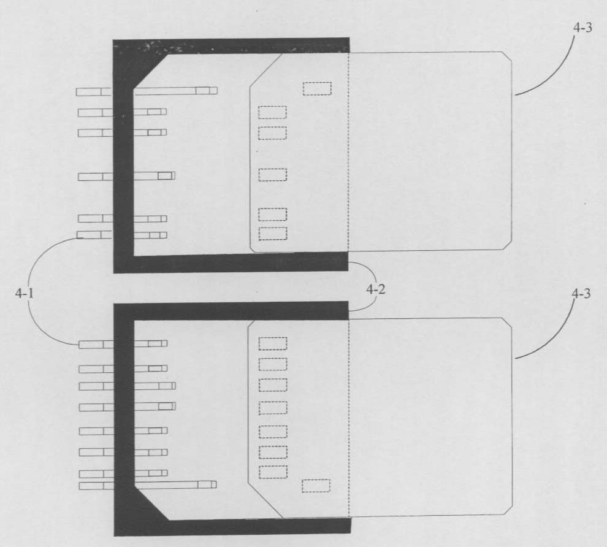

发明名称--一种闪存卡及其读卡设备插座和数据传输方法
| 申请号 | CN200810104386.5 | 申请日 | 2008.04.22 | ||
| 公开（公告）号 | CN101266537A | 公开（公告）日 | 2008.09.17 | ||
| IPC分类号 | G06F3/08; G06K7/00; G06F13/38 | 申请（专利权）人 | 普天信息技术研究院有限公司; | ||
| 发明人 | 曹会扬;姜涌;杨光敏; | 优先权号 |
摘要:
本发明公开了一种闪存卡及其读卡设备插座和数据传输方法，在所述闪存卡上设置至少一组扩展管脚，在读卡设备的插座上设置对应所述扩展管脚的扩展接触针；所述闪存卡插入读卡设备的插座后，主管脚与接触针相接触形成主总线传输通路，所述扩展管脚与扩展接触针相接触形成扩展总线传输通路；读卡设备通过所述主总线传输通路，向闪存卡发送指示命令，指示所述主总线传输通路与所述扩展总线传输通路的使用方式；读卡设备和闪存卡按照所述使用方式，通过主总线传输通路和/或扩展总线传输通路进行数据传输。本发明闪存卡具有灵活的总线传输通路工作机制，并且相对于常用闪存卡接口来说大幅提高了所能提供的最大数据传输速度。
摘要附图:
